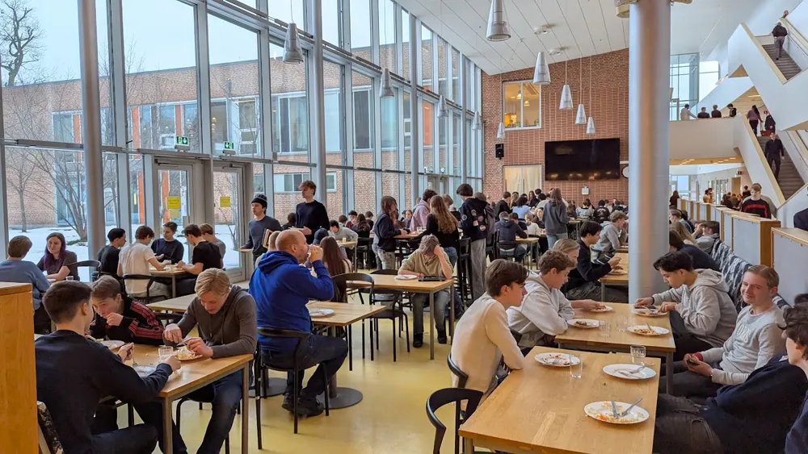

Östra gymnasiet

Löken granskar: Skolans hemliga kött-nollvision
På skolan har ni säkert märkt att när eleverna får lunch så är det antingen vegetariskt, 0 % kött, eller en blandfärs där det, enligt kökets egna källor, är 70 % kött och resten är en blandning av andra ingredienser. Det är inget helt oväntat då det är billigare med mindre kött och med tanke på att skolan ska vara mer hållbar så vill ledningen dra ner köttkonsumtionen bland eleverna.
Löken kan idag avslöja att detta kan vara början på en lång process mot en helt köttlös skola. På grund av att köket redan har blandat ut köttet till viss del i lunchen så kan de blanda ut det mer och mer i framtiden genom att det har blivit det förväntade för kötträtter. Då Östras elever redan är vana kan köket fortsätta blanda ut lunchen successivt utan att uppmärksamma det tills eleverna blir vana vid att inte äta kött längre.
Skolan kan tjäna mycket pengar genom att behöva betala mindre för kött till de nära 780 eleverna på skolan. Det är praktiskt givet att kött kostar mer per kilo jämfört med alternativen, speciellt om man ska laga mat på skala. Man kan också resonera om att skolan alltid vill spara pengar om det är möjligt då det finns många utgifter i skolmaterial som kommer med att driva en skola.
Köket kommer spara en massa tid då om de inte längre behöver servera kött så är det inte längre tvungna att vandra ut i skogen för att söka och jaga vilda kor, dra hem och spola av bytet, flå och dränera kroppen på blod, skära ut tarmarna och ryggrad, bryta ner djuret i de olika köttgrupperna för att slutligen göra diverse luncher för hungriga tonåringar.